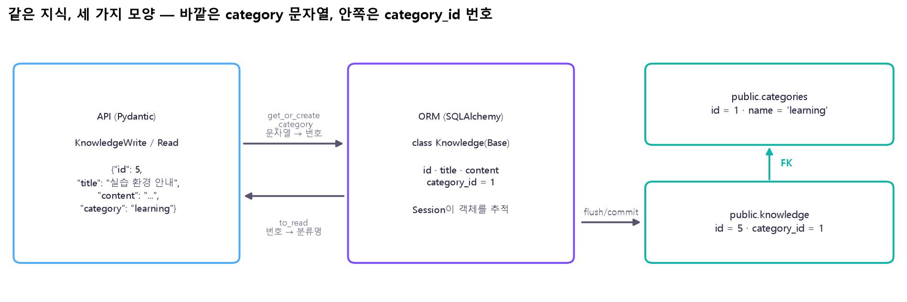
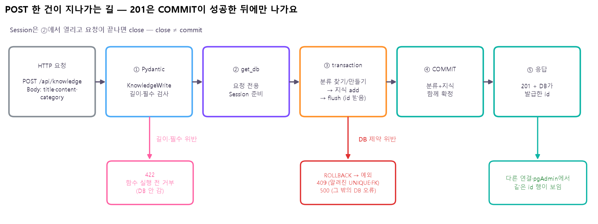
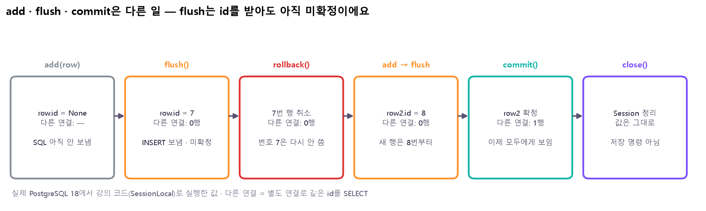
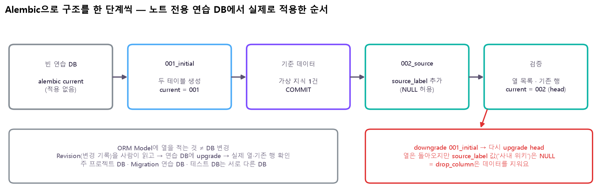

python -m pip install "sqlalchemy>=2.0,<2.1" "psycopg[binary]>=3,<4" pydantic-settings alembic
python -m uvicorn main:app --port 8001 --reload # API 서버 (포트는 자유)
💡 API 포트(예: 8001)와 DB 포트(5432)는 다른 것이에요. uvicorn의 --port는 내 API가 요청을 받을 문, 5432는 PostgreSQL 서버의 문이에요. 같은 포트에 서버 두 개를 띄우면 충돌해요.
이거 어디에 써?
"가상환경 정책이 바뀌었어요. AI 도우미는 무엇을 기준으로 답해야 하죠?" — 답의 근거는 최신 원본 지식이에요. 오늘은 담당자가 /docs(나중엔 관리 화면)에서 안내를 등록·수정하면 그게 PostgreSQL에 실제로 반영되는 원본 관리 서비스를 완성해요. AI 도우미의 검색(RAG)·도구(Agent)는 그 원본을 읽어 가는 이후 단계예요.
Day17 · Day18 (따로)
Day19 (하나로)
흐름
FastAPI → JSON 파일 pgAdmin → PostgreSQL
POST → FastAPI 입력 검증 → ORM·Session → PostgreSQL → 201
관계
API를 불러도 DB는 안 바뀜 (별개)
API의 새 지식 = DB의 새 행
증거
—
API 응답 id = SQL로 찾은 knowledge.id = 다시 GET한 id
⚠️ API가 있다고 Agent 도구가 되는 건 아니에요. 도구로 쓰려면 Method·Path·입력 스키마·권한을 따로 계약해야 해요. 그리고 원본을 고쳐도 검색 인덱스는 별도 동기화가 필요해요. ?category=learning 필터도 의미 검색이 아니라 문자열 일치예요.
📋 명세 — 지식 관리 API
오늘 만든 서비스의 약속을 한곳에 모았어요. 바깥(API)에서 보는 모양과 안쪽(DB)에 저장되는 모양을 나눠 적었어요.
1. 엔드포인트
Method · Path
입력
성공
실패
GET /api/knowledge
Query category (선택, 문자열)
200 · Knowledge[] (id 오름차순, 없으면 [])
—
GET /api/knowledge/{knowledge_id}
Path knowledge_id (정수)
200 · Knowledge
422 정수 아님 · 404 없음
POST /api/knowledge
Body KnowledgeWrite
201 · Knowledge (DB가 발급한 id)
422 입력 · 409 충돌 · 500
PUT /api/knowledge/{knowledge_id}
Path + Body KnowledgeWrite (세 필드 모두)
200 · Knowledge (같은 id)
422 · 404 · 409 · 500
DELETE /api/knowledge/{knowledge_id}
Path
204 · 본문 없음
422 · 404
GET /health
—
200 · {"status": "ok"}
—
2. 요청 · 응답 스키마
필드
타입
KnowledgeWrite (요청)
Knowledge (응답)
규칙
id
integer
— (보내지 않음)
✅
DB가 발급 · 바뀌지 않음
title
string
필수
✅
1~80자 · 중복 허용
content
string
필수
✅
1~2,000자
category
string
필수
✅
1~30자 · 처음 보는 이름이면 분류를 새로 만듦
// 요청 (POST · PUT) // 응답 (200 · 201)
{ {
"title": "실습 환경 안내", "id": 5,
"content": "실행 전에 가상환경을 확인합니다.", "title": "실습 환경 안내",
"category": "learning" "content": "실행 전에 가상환경을 확인합니다.",
} "category": "learning"
}
모르는 필드(예: author)는 오류 없이 무시돼요. 응답에는 category_id 같은 DB 내부 열이 나가지 않아요.
3. DB 스키마
표.열
타입
제약 (이름)
categories.id
BIGINT IDENTITY
PK
categories.name
VARCHAR(30)
NOT NULL · UNIQUE (categories_name_key) · CHECK 1~30자 (categories_name_length)
knowledge.id
BIGINT IDENTITY
PK
knowledge.title
VARCHAR(80)
NOT NULL · CHECK 1~80자 (knowledge_title_length)
knowledge.content
TEXT
NOT NULL · CHECK 1~2,000자 (knowledge_content_length)
knowledge.category_id
BIGINT
NOT NULL · FK → categories.id ON DELETE RESTRICT (knowledge_category_fk)
4. API ↔ DB 대응
API 필드
DB
바꾸는 곳
id
knowledge.id
그대로
title · content
knowledge.title · knowledge.content
그대로
category (이름)
knowledge.category_id → categories.name
들어올 때 get_or_create_category · 나갈 때 to_read
5. 오류 응답
상태
본문
언제
DB 상태
422
{"detail": [ {type, loc, msg, input}, ... ]}
필수 누락 · 길이 위반 · Path가 정수 아님
아무것도 시도 안 함
404
{"detail": "Knowledge not found"}
없는 지식 id
변화 없음 (새 분류도 안 생김)
409
{"detail": "Data conflict"}
분류명 UNIQUE 충돌 · FK 충돌
ROLLBACK
503
{"detail": "Database unavailable"}
DB 연결 계열 오류 (SQLSTATE 08…) · 연결 끊김
성공으로 보고하지 않음
500
{"detail": "Database operation failed"}
그 밖의 DB 오류 (예: 예상 못 한 CHECK 위반)
ROLLBACK
오류 본문에는 SQL·파라미터·DB 진단 메시지를 넣지 않아요.
6. 동작 보장
항목
약속
성공 응답 시점
201·200·204는 COMMIT 성공 뒤에만
원자성
새 분류 + 지식은 함께 저장되거나 함께 취소
PUT
id·전체 개수 유지 · 없는 id를 새로 만들지 않음
DELETE
그 지식만 삭제 · 부모 분류는 남음
id
연속이 아닐 수 있음 (실패·취소한 번호는 다시 안 씀)
① 연결 대상 고정 · 설정 분리
코드보다 먼저 정할 것: 어느 DB에 붙을지. DB 이름이 틀리면 코드가 멀쩡해도 다른 데이터를 보게 돼요. 그래서 용도별로 DB를 나눠요.
DB
쓰는 곳
지킬 것
실제 데이터 DB
API가 평소에 쓰는 곳
기존 데이터 보존 · DROP·Seed 반복 금지
Migration 연습 DB
구조 변경을 먼저 시험
비어 있는 별도 DB에서
테스트 DB
자동 테스트
테스트가 만든 행만 정리
⚠️ API 시작할 때 create_all()이나 Seed를 자동 실행하게 넣지 않아요. 이미 데이터가 있는 DB에 표를 다시 만들거나 같은 데이터를 또 넣을 수 있어요.
비밀은 코드 밖으로 — .env
Host·Port·DB·계정·비밀번호를 코드에 쓰지 않고 .env 파일에 두고, .gitignore로 Git에서 빼요. 저장소에는 값이 빈 .env.example만 올려요.
🤔 SecretStr은 암호화야? — 아니에요. print(settings)처럼 실수로 출력할 때 별표로 가려 주는 것뿐이에요. .env 파일 자체는 평범한 글자 파일이라, 공유·커밋하지 않는 게 진짜 보호예요.
🤔 왜 접속 주소를 f-string으로 이어 붙이면 안 돼? — 비밀번호에 @나 %가 있으면 주소의 구분 기호와 섞여요. 실제로 p@ss%w0rd를 이어 붙였더니 호스트가 'ss%w0rd@localhost', 비밀번호가 'p'로 잘못 읽혔어요. URL.create는 칸별로 따로 받아서 이런 일이 없어요.
💡 Engine을 만들었다 ≠ 접속 성공. Engine은 "필요할 때 연결을 빌려 줄 준비"만 해요. 실제로 SQL을 한 번 보내 봐야 Host·비밀번호가 맞는지 알 수 있어요. 그리고 행 수를 "3이겠지"로 고정하지 마세요 — 그 사이 다른 작업으로 바뀌었을 수 있어요.
② ORM · Engine · Session
이름
하는 일
수명
Engine / Pool
DB 연결을 만들고 모아 두었다 빌려줌
앱 전체에서 하나를 재사용
Psycopg (Driver)
실제로 PostgreSQL과 바이트를 주고받음
Engine 아래에서 동작
ORM Model
파이썬 클래스 ⇄ 테이블, 객체 ⇄ 행
코드 정의
Session
객체 추적 · SQL 실행 · 트랜잭션의 작업 공간
요청마다 새로 만들고 끝나면 정리
🤔 Session을 전역 하나로 같이 쓰면 안 돼? — 요청 A가 실패해서 rollback 대기 상태인데 요청 B가 같은 Session을 쓰면 B까지 막혀요. 서로의 미확정 변경이 섞이기도 하고요. 그래서 Engine(연결 창고)은 공유, Session(작업대)은 요청마다 하나예요.
⚠️ close()는 저장이 아니에요. 요청이 끝나 Session이 닫혀도 commit하지 않은 변경은 확정되지 않아요. 쓰기 확정은 오직 commit().

무엇을 보나: 같은 지식이 세 층에서 모양이 달라요. API는 "category": "learning" 문자열, ORM은 category_id = 1 번호, DB는 두 표와 FK. 들어올 땐 get_or_create_category가 이름 → 번호, 나갈 땐 to_read가 번호 → 이름으로 바꿔요. 🤔 왜 바깥을 안 바꿔? 어제 API를 쓰던 쪽(화면·나중의 Agent)이 아무것도 고치지 않아도 되게요. 안쪽 저장 방식은 바깥의 약속과 따로 바뀔 수 있어야 해요.
CheckConstraint("char_length(...) BETWEEN 1 AND 80", name=...)
CONSTRAINT ... CHECK (...)
⚠️ 클래스를 선언했다 ≠ CREATE TABLE을 실행했다. Model은 "DB가 이렇게 생겼을 거야"라는 설명이에요. 기존 표에 열을 추가해도 DB는 안 바뀌어요(⑥ Migration). 그래서 Model과 실제 DDL이 같은지 대조해요. 명령어 사전에 Model이 낼 DDL을 실제로 뽑아 어제 DDL과 비교해 뒀어요.
🔧 KnowledgeWrite · KnowledgeRead · to_read()명령어 사전에서 자세히 →
class KnowledgeWrite(BaseModel):
title: str = Field(min_length=1, max_length=80)
③ 다섯 API를 DB CRUD로

무엇을 보나:POST /api/knowledge 한 건이 지나가는 순서예요. ① 길이·필수가 틀리면 함수가 실행되기도 전에 422(DB엔 가지도 않아요). ③ 안에서 DB 제약이 터지면 ROLLBACK 후 예외 → 오류 처리기가 409/500으로 바꿔요. 모두 통과해 ④ COMMIT이 성공해야 비로소 ⑤ 201이에요. 🤔 왜 201을 COMMIT 뒤에? 201을 먼저 보내고 COMMIT이 실패하면, 사용자는 "저장됐다"고 믿는데 DB엔 없어요. 응답은 사실이 확정된 뒤에.
다섯 경로의 입력·응답·상태 코드는 📋 명세에 모아 뒀어요. 아래는 각 경로가 DB와 어떻게 이어지는지예요.
🔧 목록 GET — select(Knowledge, Category.name).join(...)명령어 사전에서 자세히 →
🤔 SQL 문자열을 직접 쓰지 않고 select()로? — 어제 SQL과 1:1로 대응해요(select=SELECT, join=JOIN ON, order_by=ORDER BY). 대신 ?category= 같은 사용자 입력이 SQL 문자열에 그대로 끼어들지 않고 값으로 따로 전달(바인딩)돼서, 입력으로 SQL을 조작하는 공격(SQL Injection)을 막아요.
🔧 get_or_create_category() — 분류 찾고 없으면 만들기 명령어 사전에서 자세히 →
category = db.scalar(select(Category).where(Category.name == name))
if category is None: db.add(Category(name=name)); db.flush() # id 확보, 아직 미확정
💡 있는 분류는 그 ID를 재사용하고, 없는 분류는 같은 트랜잭션 안에서 새로 만들어요. 여기서 commit하지 않는 게 핵심 — 분류와 지식을 함께 확정해야 반쪽 저장이 없어요. ("조회 후 생성"이 동시 요청 충돌까지 해결하지는 않아요 → 그땐 UNIQUE 위반 409.)
row = knowledge_or_404(db, knowledge_id) # 먼저 존재 확인
row.title = payload.title; row.content = payload.content; row.category_id = category.id
🤔 PUT에서 왜 지식부터 찾고 분류는 나중에? — 순서를 바꾸면 없는 지식 ID로 PUT했을 때 404를 내기 전에 새 분류부터 만들어 버릴 수 있어요(트랜잭션이 롤백해 주긴 하지만, 불필요한 일은 안 하는 게 좋아요). 실제로 PUT /99999 + 새 분류 이름 → 404, 분류도 안 생겼어요. 그리고 ORM 객체의 속성을 바꾸면 flush/commit 때 UPDATE가 나가요 — UPDATE SQL을 직접 쓰지 않아도 돼요.
db.delete(row) # 삭제 대상으로 표시 → commit 때 실제 삭제
return Response(status_code=204)
④ 트랜잭션 · Session 메서드
메서드
하는 일
하지 않는 일
add(obj)
새 객체를 Session에 등록
SQL을 바로 보내지도, commit하지도 않음
flush()
쌓인 변경 SQL을 DB로 전송 · id 확보
트랜잭션을 확정하지 않음
commit()
필요하면 flush 후 확정
모든 오류·경쟁을 자동 해결하지 않음
refresh(obj)
DB 값을 객체에 다시 읽음
저장 명령이 아님
rollback()
미확정 변경 취소 · 실패 상태 정리
발급된 ID 번호까지 되돌리지 않음
close()
연결·상태 정리
저장을 자동 확정하지 않음

무엇을 보나: 실제 PostgreSQL에서 한 칸씩 실행한 결과예요. add만 하면 id가 None(SQL을 아직 안 보냄). flush하면 DB가 7번을 발급하지만 다른 연결에선 0행 — 미확정이니까요. rollback하면 사라지고, 다시 넣으면 8번(7번은 다시 안 써요, Day18의 시퀀스). commit 뒤에야 다른 연결에서 1행. 🤔 그럼 flush는 왜 해? POST 응답에 넣을 id를 commit 전에 알아야 해서요. 응답 객체를 만든 다음 commit하고 돌려줘요.
🔧 Session 메서드 실제 비교 — add · flush · rollback · commit · refresh 명령어 사전에서 자세히 →
⚠️ 잘못 나누면 반쪽 저장. 새 분류를 먼저 commit하고 지식 저장이 실패하면, 지식은 없고 새 분류만 남아요(명령어 사전에 실제로 남은 걸 보여 줬어요). 그래서 한 요청의 쓰기 전체를 with transaction(db): 하나로 감싸고, 도우미 안에서 추가 commit·중첩 transaction을 하지 않아요.
except IntegrityError: db.rollback() # 안 하면 다음 SQL이 PendingRollbackError
⑤ 오류 처리 — 원인별로 다른 응답
어떤 상황에 어떤 상태 코드를 주는지는 📋 명세의 오류 응답 표에 있어요. 여기선 왜 그렇게 나누는지와 코드를 봐요.
🤔 DB 오류는 다 409(충돌)로 주면 안 돼? — 409는 "요청이 지금 데이터와 부딪혔다, 바꿔서 다시 보내라"는 뜻이에요. 그런데 CHECK 위반은 API 검증(422)을 통과했는데 DB에서 막힌 거라 우리 코드와 DB 규칙이 어긋났다는 신호(500)예요. 같은 IntegrityError라도 sqlstate와 제약 이름을 보고 나눠요. 그리고 응답엔 SQL·파라미터·진단 문자열을 그대로 내보내지 않아요.
🔧 @app.exception_handler(IntegrityError) — 제약 이름으로 409/500 명령어 사전에서 자세히 →
code = getattr(exc.orig, "sqlstate", None); name = getattr(exc.orig.diag, "constraint_name", None)
status = 409 if (code, name) in known else 500
🔧 @app.exception_handler(DBAPIError) — 접속 오류 503 명령어 사전에서 자세히 →
unavailable = isinstance(exc, OperationalError) and (str(code or "").startswith("08") or exc.connection_invalidated)
⚠️ 실제로 돌려 보니: DB 서버가 아예 없는 포트로 접속하면 psycopg 오류에 SQLSTATE가 없어서(None) 위 503 판정 규칙에 안 걸리고 500이 됐어요. 이런 판정 규칙은 실제 오류를 일으켜 보고 확인해야 해요.
응답이 이상하면 — 연결 대상부터
증상
먼저 확인
피할 행동
API 결과와 SQL 결과가 다름
서버 포트 · DB_NAME · schema · 실제 ID
Seed를 무작정 다시 넣기
DB를 못 찾음 · 인증 실패
pgAdmin의 Host·Port·DB·계정과 비교
비밀번호·접속 문자열 공개
테이블·열 오류
ORM 매핑과 실제 DDL 대조
create_all로 모든 차이 해결 기대
PendingRollbackError
실패 후 rollback 여부 · 경계 중첩
같은 Session을 계속 사용
POST 재시도 후 중복 데이터
이전 요청 성공 여부 · 실제 DB 조회
실패처럼 보이면 무조건 재전송
🧪 이 요청은 어디서 멈출까?
요청을 고르면 어느 단계에서 멈추는지, 응답과 DB가 어떻게 되는지 보여 줘요. 결과는 모두 이 코드를 실제 PostgreSQL에서 돌려 확인한 것이에요.
응답 —
⑥ Migration — Alembic
ORM Model에 source_label 열을 적었다고 DB에 열이 생기지 않아요. DB 구조 변경은 Revision(변경 기록 파일)으로 남기고, 사람이 읽고, 대상 DB에 upgrade하고, 실제 열과 기존 행을 확인해요.

무엇을 보나: 노트 전용 연습 DB에서 실제로 한 순서예요. 001_initial(두 표) → 데이터 1건 → 002_source(NULL 허용 열 추가) → 열 목록·기존 행 확인. 기존 행은 그대로이고 새 열은 NULL이었어요. 빨간 상자: downgrade로 되돌렸다가 다시 올렸더니 열은 돌아왔지만 넣어 둔 값은 NULL — drop_column은 데이터를 지워요. 🤔 왜 별도 DB에서? 연습하다 되돌림까지 해 보면 데이터가 날아갈 수 있어서, 주 프로젝트 DB는 절대 건드리지 않아요.
용어
뜻
Revision
변경 하나를 담은 파이썬 파일 (upgrade() · downgrade())
revision / down_revision
이 변경의 ID / 바로 앞 변경의 ID → 순서가 이어진 사슬
head
사슬의 마지막 Revision
alembic_version 표
DB가 지금 어느 Revision까지 적용됐는지 기록 (alembic current가 읽음)
⚠️ autogenerate는 초안, stamp는 수리가 아니에요. 실제로 Model의 열 이름만 바꿔 autogenerate를 돌렸더니 "이름 변경"이 새 열 추가 + 옛 열 삭제로 나왔어요 — 그대로 적용하면 값이 날아가요. 관련 없는 FK 삭제·재생성 줄까지 섞여 있었어요. 그리고 alembic stamp는 DDL을 실행하지 않고 "여기까지 적용됨"이라고 기록만 바꿔요. 실패했다고 stamp부터 하면 기록과 실제 구조가 어긋나요.
⑦ 통합 검증 — HTTP와 DB를 함께
HTTP 확인
DB 확인
이것까진 증명 안 함
201 + 생성된 id
같은 id의 지식·분류 관계 조회
모든 운영 장애에 대한 내구성
PUT 200
같은 id의 본문·분류 반영
동시 수정 충돌 전체
DELETE 204 + 빈 본문
대상 0행 · 다른 행 보존
미래 벡터 인덱스 자동 삭제
422 / 404
기존 데이터 불변
같은 Session의 DB 오류 복구
재시작 후 GET
새 DB 연결의 값과 동일
DB 서버 장애·백업 복구
🤔 422가 나왔으면 rollback도 확인된 거 아니야? — 아니에요. 422는 쓰기 코드에 들어가기 전에 거부된 거라 DB에 아무것도 시도하지 않았어요. rollback이 제대로 되는지는 DB 제약을 실제로 위반시켜 봐야 알아요(위 🧪의 마지막 항목). 그리고 오류 뒤 다음 POST가 201이라는 건 새 요청이 성공한 것이지, 이전 Session이 회복됐다는 증거는 아니에요.
🔧 테스트 DB로 get_db 교체 — dependency_overrides명령어 사전에서 자세히 →
python -m uvicorn main:app --port 8001 # Ctrl+C → 다시 실행 → GET /api/knowledge/{id}
💡 TestClient ≠ 실서버 재시작, mock(가짜 객체) 통과 ≠ PostgreSQL 통과. 진짜 DB에서 돌려 봐야 제약·트랜잭션이 실제로 어떻게 동작하는지 알 수 있어요. 이 노트의 결과는 실제 PostgreSQL 18에서 실행한 것이에요.
⑧ 다음 단계와 연결
오늘 완성
이후에 연결
지식 원본의 CRUD
문서·청크·출처 관리
API 입력·응답 약속
검색 결과와 LLM 생성
관계·제약·트랜잭션
Agent가 쓰는 읽기 도구
오류와 DB 반영 검증
권한·승인·인덱스 갱신 정책
다음: 11/13 LLM 기초 → 임베딩·문서 처리 → 11/20 Basic RAG. 오늘 만든 건 AI 플랫폼의 기반이고, Agent 자체를 완성한 건 아니에요. 로컬 학습용이라 인증·권한·운영 장애·검색 인덱스는 별도예요.
세 질문으로 정리
질문
답
API가 201을 반환하기 전에 무엇이 성공해야 해?
지식·분류 저장과 COMMIT
Pydantic의 category 문자열을 DB에 그대로 넣어?
아니요 — 분류명을 조회·생성해 category_id로 저장
ORM Model을 바꾸면 기존 DB 열도 바뀌어?
아니요 — Revision을 검토하고 대상 DB에 Migration 적용
원본 자료
강의: Day19_20261112.pdf (FastAPI–PostgreSQL 연동 · 지식 관리 API 완성, 82쪽) — 플랫폼 속 위치 p2–13 · 연결 대상·설정·Engine·Session p16–25 · Model·Schema·CRUD p27–35 · 트랜잭션·오류 정책 p37–44 · Migration·통합 검증 p46–53 · 다음 연결 p55·p62–63 · 부록(구조·settings·db·models·필터·경계 사례·오류 처리기·같은 Session·Alembic env·Revision·테스트·Windows 실행) p64–79
노트·명령어 사전의 결과 값: 강의 코드(settings.py · db.py · models.py · main.py · 002_source)를 그대로 옮겨 이 PC의 PostgreSQL 18에서 실행 — 노트 전용 DB 두 개를 새로 만들어 쓰고 끝난 뒤 삭제 (SQLAlchemy 2.1.8 · psycopg 3.3.8 · Alembic 1.20.1 · FastAPI 0.162.2). 스크립트 tools/io_day19.py, 그림 tools/visuals/make_day19.py